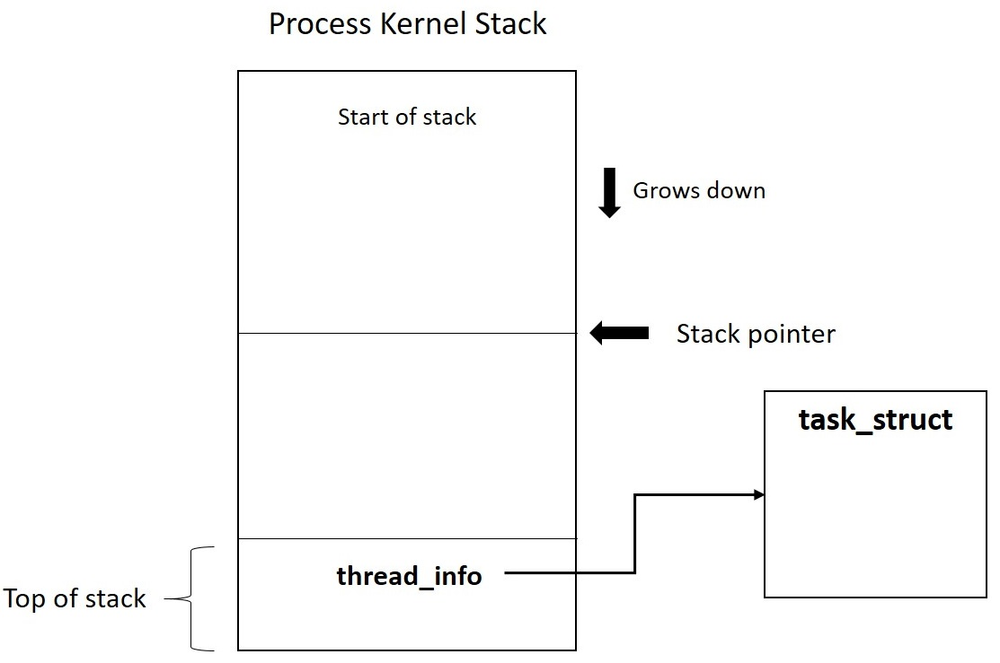
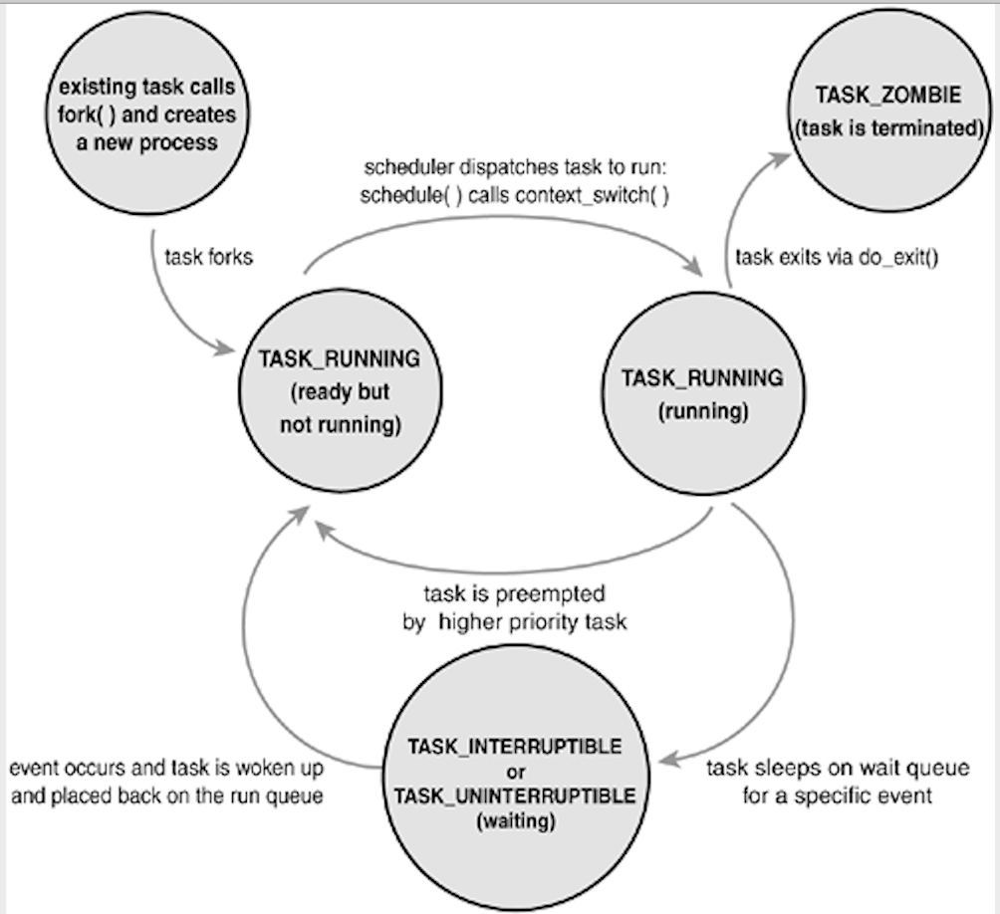

Process Management
So, What is a Process?
- A process is a program in execution.
- Program is defined to be an executable code, be it shell script or compiled binary code, stored in one of the the file systems.
- Processes are, however, more than just the executing program code
(often called the text section in Unix). - Processes, in effect, are programs running in their environments, more technically,
process contexts, in a life system. - For example, in a linux machine several users are logged in at once. All of them are running emacs. Only one copy of the emacs program is loaded in the memory. However, each emacs process has its own stack and each process has its own file descriptor table.
Threads of execution, often shortened tothreads, are theobjects of activitywithin the process.- Each thread includes a unique
program counter,process stack, and set ofprocessor registers. The kernel schedules individual threads, not processes.
Each entities that can be scheduled are allocated a process descriptortask_struct.
Note:task_structis also called asProcess Control Block.- In traditional Unix systems, each process consists of one thread.
- Linux has a unique implementation of threads: It does not differentiate threads from processes. To Linux,
a thread is just a special kind of process. - Processes provide two virtualizations:
- virtualized processor: The virtual processor gives the process the illusion that it alone monopolizes the system, despite possibly sharing the processor among dozens of other processes.
- virtual memory: Virtual memory lets the process allocate and manage memory as if it alone owned all the memory in the system.
- Interestingly, note that
threads share the virtual memory abstraction while each receives its own virtualized processor. - A program itself is not a process; a process is an active program and related resources.
Process Life Cycle
- A process begins its life when it is created. In Linux, this occurs by means of the fork() system call, which creates a new process by duplicating an existing one.
- The process that calls fork() is the parent, whereas the new process is the child.
- The parent resumes execution and the child starts execution at the same place, where the call returns.
- After a fork it is desirable to execute a new, different, program.
- The exec*() family of function calls, (execl, execlp, execle, execv, execvp), is used to create a new address space and load a new program into it.
- Finally, a program exits via the exit() system call. This function terminates the process and frees all its resources.
- When a process exits, it is placed into a special
zombie statethat is used to representterminated processesuntil the parent callswait()orwaitpid(). - Another name for a process is a
task.
The Task Structure (Process Control Block)
- The kernel stores the list of processes in a circular doubly linked list called the task list.
- Each element in the task list is a
process descriptorof the typestruct task_struct, which is defined in. - The task structure contains all the information about a specific process.
- The task_struct is a relatively large data structure, at around 1.7 kilobytes on a 32-bit machine.
-
The task structure contains the data that describes the executing program: open files, the process's address space, pending signals, the process's state, and much more..

-
The system identifies processes by a unique process identification value or PID, The kernel stores this value as pid inside each task structure.
- Because of backward compatibility with earlier Unix and Linux versions, however, the default maximum value of PID is only 32,768.
-
the administrator may increase the maximum value via
cat /proc/sys/kernel/pid_max 32768 -
Process States:
